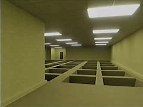
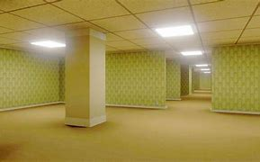

Audio Aspects of an Escape Room
While researching the role of audio in escape rooms, I found out that audio influences most of the experience (Backrooms Music January 2025). The Backrooms has a creepy vibe that wouldn't work the same without the subtle hum of flickering fluorescent lights, distant footsteps, or those faint, almost imperceptible whispers. They do this to create this constant feeling that youre not alone, even when you are. That atmosphere pulls you in and keeps you on edge the entire time. The film saw shows a good example of audio when using the tv to show the sense of the person being trapped (Saw Clip January 2025). I also noticed how other escape rooms use sound in smart ways to guide players or add tension. A ticking clock amp up the pressure as time runs out, and sudden noises can make you jump or hint that something important just happened. Voice recordings or messages are another cool trick, giving clues or backstory in a way that feels way more immersive than just reading a note. What really stuck with me was how audio can respond to what youre doing. In a game like Backrooms, the sound might shift to warn you that danger is close, or it might change when you solve something. Its subtle, but it makes the whole experience feel alive. Audio doesnt just fill the silence it drives the story. (Backrooms Chase Sound January 2025)
Visual/Level Design Aspects of an Escape Room
Escape room games rely heavily on immersive visuals and thoughtful level design to engage players and enhance the gameplay experience. These two elements help create a captivating environment that challenges the player and gives a sense of being trapped while keeping them hooked into the game. Most escape rooms use the environment to reflect the theme of the game whether it is a haunted mansion or a maze. Escape rooms use the same theme consistency to keep the same feel throughout the whole game. They also use lighting to help guide players be able to set moods or highlight important clues. Level design focuses on creating logical puzzles and intuitive as well as physical space awareness. It ensures that the player feels challenged yet capable of advancing and completing the puzzles. Most escape room games have some sort of narrative to help push the game in the right direction and guide the player to finding clues and help complete the puzzles needed to escape the game. While looking at games like the backrooms i saw that they use probs to help create the story and combine them with textures to give the player more sense of feeling trapped and the need to escape.
 Interactivity Aspects of Escape Rooms
While looking at games like the backrooms i noticed that interactive objects help make the escape room engaging and immersive and helps add to the feel of completing puzzles to escape. It also helps create an environment where players feel like their actions directly impact the story and progression. A great thing about escape room games is the heavy relief they must solve problems by opening drawers, turning knobs and controlling objects. This element helps make engagement for the player to make them feel like they are truly part of the game. players might also have to open chests or assemble broken objects to find hidden objects. Some escape rooms also use innovative technology to enhance hands on interaction. Players could slide objects to solve other puzzles or trigger a light or another object to appear. Most escape rooms are designed to encourage the player to try and use their knowledge to find the way out and how to solve the puzzle, whether this means opening doors with hidden keys or finding correct passwords. Most escape rooms are story driven this helps drive the player the right way in the story for example a detective game maybe cracking a safe would be the main drive of the game to find the way out and complete the game.
Harvard References
(Backrooms Music January 2025) (Youtube. (0). Backrooms Music. [Online]. Youtube. . Available at: https://www.youtube.com/watch?v=0yZhoFQ9yoA [Accessed 7 January 2025].)
(Saw Clip January 2025)(Saw. (0). Clip from saw. [Online]. Youtube. Available at: https://www.youtube.com/watch?v=NNtgp4KT57w [Accessed 7 January 2025].)
(Backrooms Chase Sound January 2025) [Backrooms chase sound. (0). [Online]. Youtube. Available at: https://www.youtube.com/watch?v=h8qjqKslBq8 [Accessed 14 January 2025].
This page was created by Sonny and only Sonny. Copyright 2025.